TENVORIA + CRYONLABS
Novos mundos.
Criações originais.
Explore os mods oficiais de Thiago Millares.
Explorar mods TecrMods WindowsCatálogo oficial
Carregando…

TecrModsTENVORIA + CRYONLABS
Explore os mods oficiais de Thiago Millares.
Explorar mods TecrMods WindowsCarregando…